01. Squarefree count Q(x)
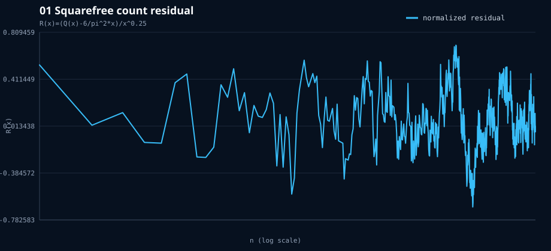
KNOWN-MATH / classical squarefree error
The level line is real, but the 1/4 exponent question is a named classical squarefree-error problem, not an undiscovered object.
02. Liouville L(x)
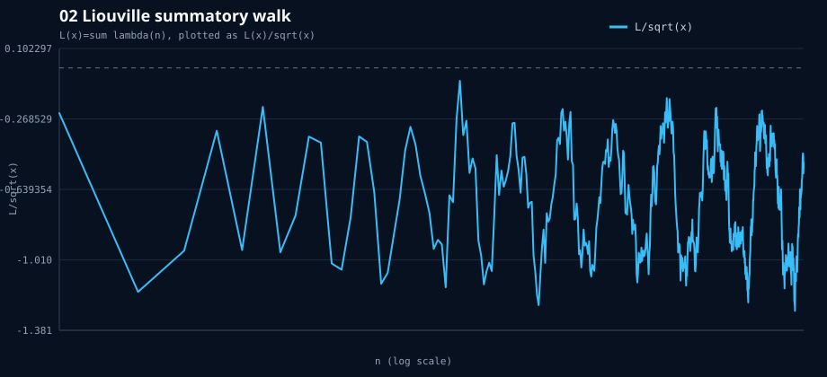
KNOWN-MATH / Pólya and RH-adjacent
Distinct from Mertens in the app, but the object and its failure modes are classical; no new discovery claim survives.
03. Dirichlet divisor Delta(x)
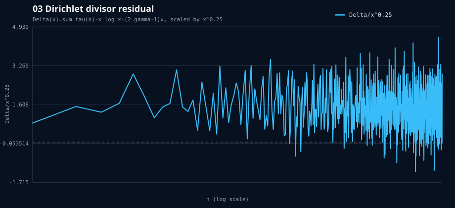
OPEN CLASSICAL PROBLEM
This is one of the best visual 1/4 siblings, but it is exactly the Dirichlet divisor problem; the plot is not undiscovered mathematics.
04. Gauss circle E(x)
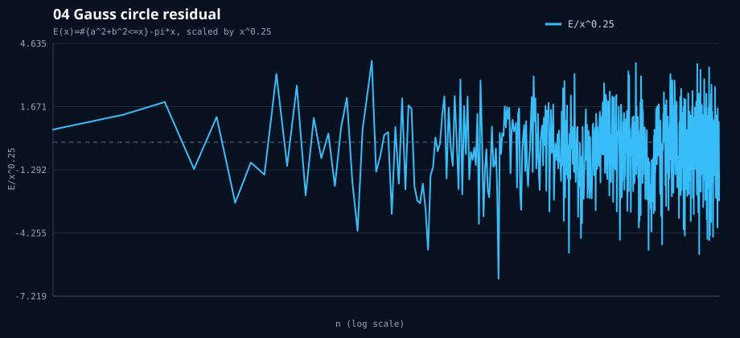
OPEN CLASSICAL PROBLEM
A genuine non-zeta-looking 1/4 front, but the circle problem is a famous old problem, not a newly uncovered line.
05. Totient summatory Phi(x)
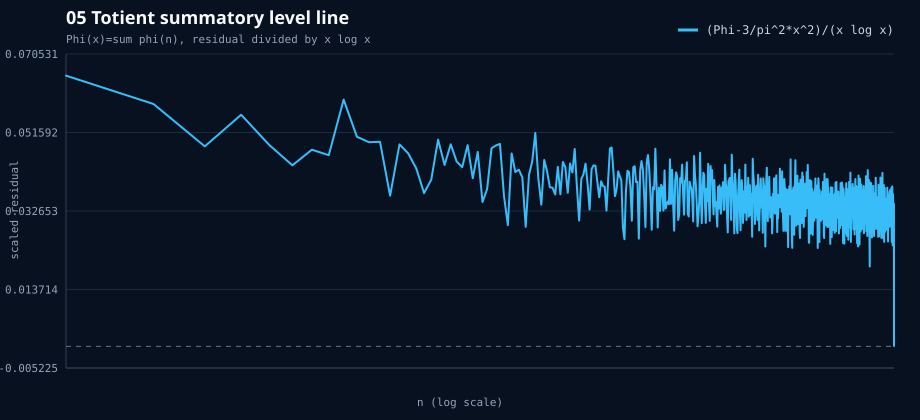
KNOWN-MATH / Farey-coprimality calibration
The 3/pi^2 level line is classical and overlaps the Farey/coprimality branch.
06. Normalized Mertens m(x)
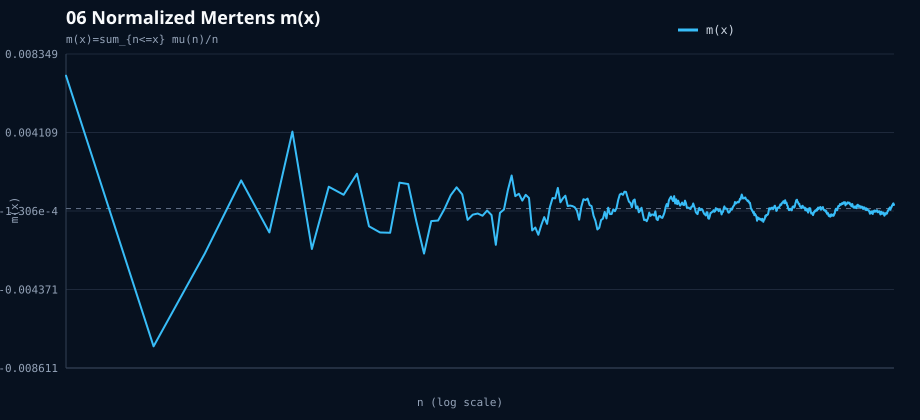
KNOWN-MATH / Mertens branch
Calmer than M(x), but it is still a standard Mobius summatory object and belongs to the logged Mertens family.
07. Dyadic-Mobius G2
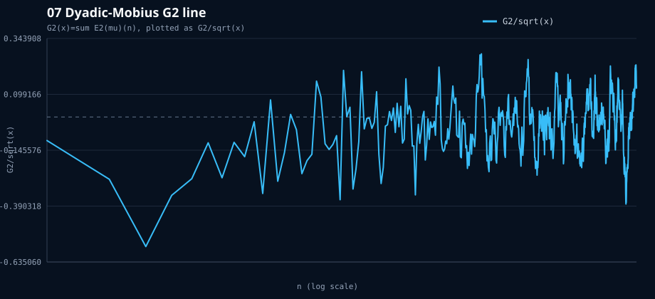
PROJECT-NOVEL / not mathematically established as new
This is the most native unlogged transform in the batch. It is a new visualization here, but structurally it is a bounded dyadic transform of Mobius, so not an undiscovered theorem.
08. E2-invariance chip-order test
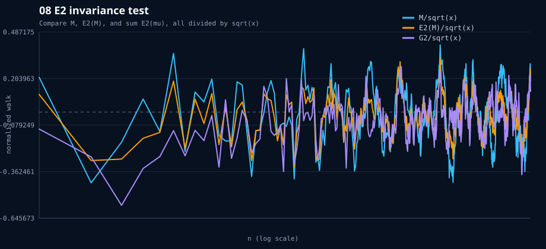
PROJECT-NOVEL DIAGNOSTIC / not undiscovered math
Useful as an instrument test: the square-root scale persists under these dyadic orders. That is a transform diagnostic, not a new critical line.
09. Chebyshev bias mod 4
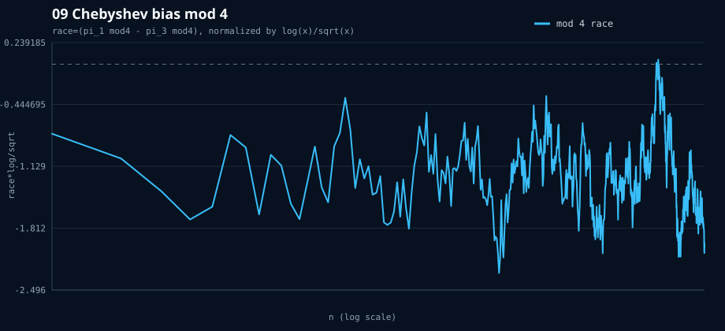
KNOWN-MATH / prime number race
The visual bias is real, but it is the classical Chebyshev/Rubinstein-Sarnak prime race.
10. Race family over moduli
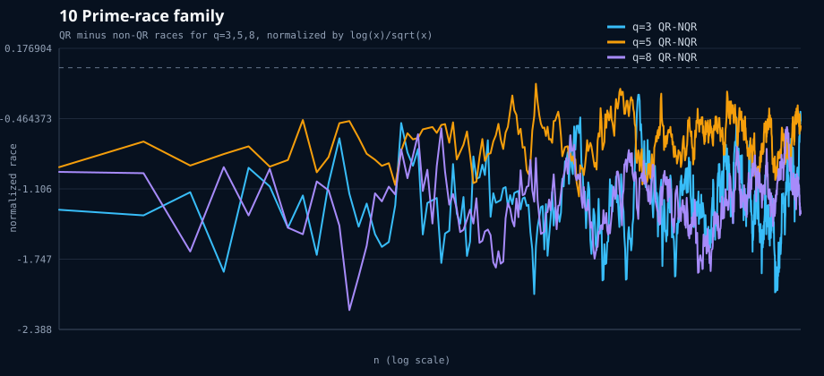
KNOWN-MATH / prime number races
Good calibration family; the direction and scale are part of known prime-race theory.
11. Liouville AP bias mod 4
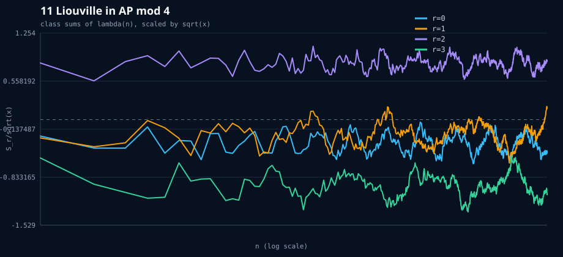
KNOWN-MATH / multiplicative-function race
It is an independent-looking bias plot, but lambda in arithmetic progressions is a classical multiplicative-function object.
12. Gap log-survival
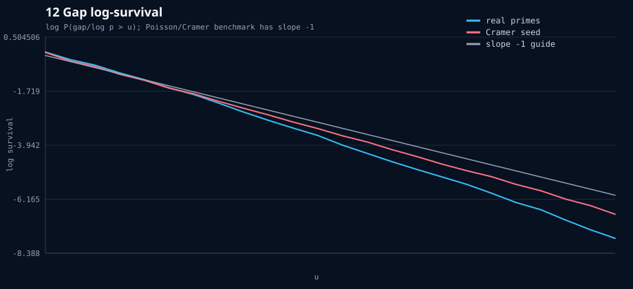
KNOWN-MATH / Cramer-Poisson calibration
The straight line is the null model itself; deviations are useful diagnostics, not an undiscovered line.
13. sum(g_n-log p_n) walk
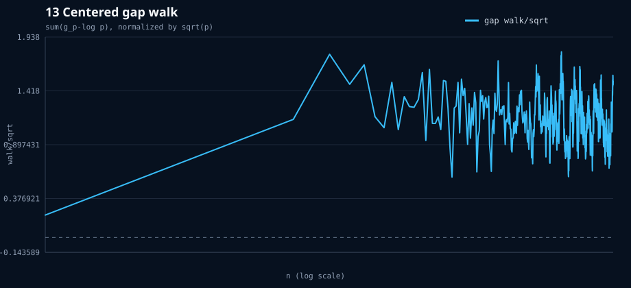
KNOWN-MATH DISGUISE / theta telescope
The walk telescopes to p_k-2-theta(p_{k-1}); it is Chebyshev theta in gap coordinates.
14. Maximal-gap Cramer line
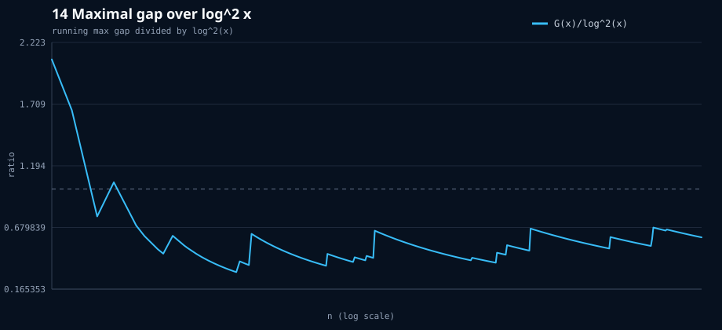
KNOWN/CONJECTURAL GAP THEORY
A legitimate frontier diagnostic, but Cramer/Granville maximal-gap behavior is already a named research area.
15. sum(Omega-omega)(n)
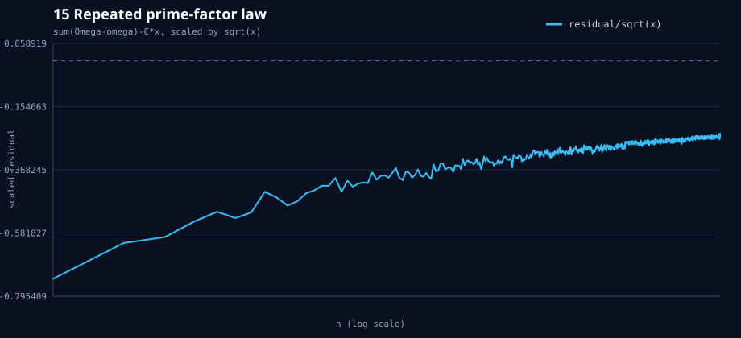
KNOWN-MATH / additive-function mean
The constant-slope law is standard additive-function averaging; the residual is a calibration target.
16. Erdos-Kac balance
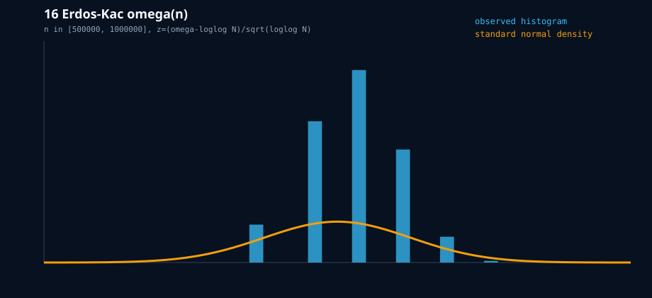
KNOWN-MATH / CLT calibration
The slow convergence is visible; this is a textbook theorem-shaped control, not a new line.
17. k-free ladder
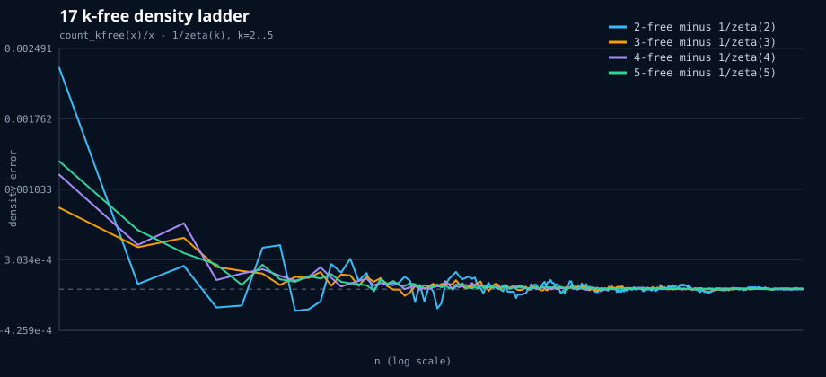
KNOWN-MATH / zeta-density family
The slope constants and error hierarchy are classical; useful family visualization, not undiscovered.
18. Coprimality/Farey-count residual
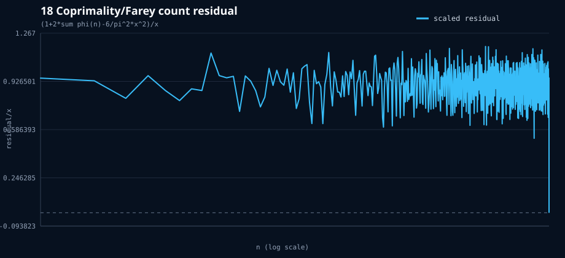
KNOWN-MATH / overlaps totient
This is the two-dimensional version of the totient-sum line, not a new branch distinct from #5.
19. Matrix critical width W
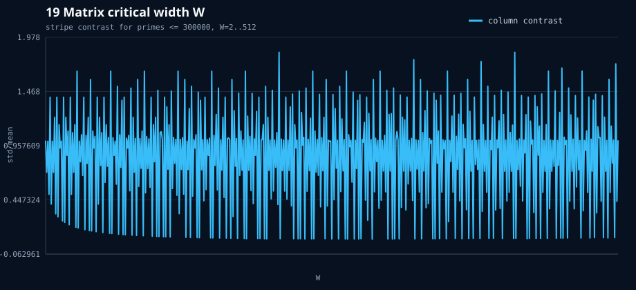
KNOWN RESIDUE-LAYER FRONT
The contrast peaks when W has many small prime factors. That is local residue geometry, not an undiscovered critical line.
20. Bounded-CF / Zaremba dimension front
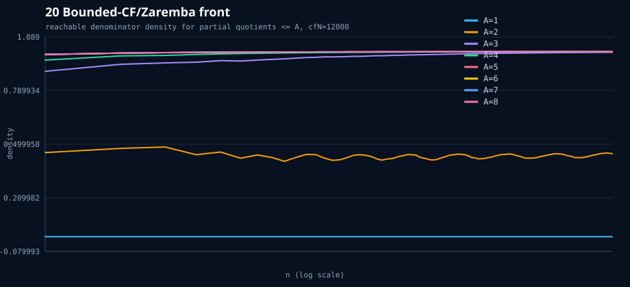
OPEN/KNOWN ZAREMBA BRANCH
The threshold picture is meaningful, but it is the established Zaremba continued-fraction problem rather than an undiscovered line.